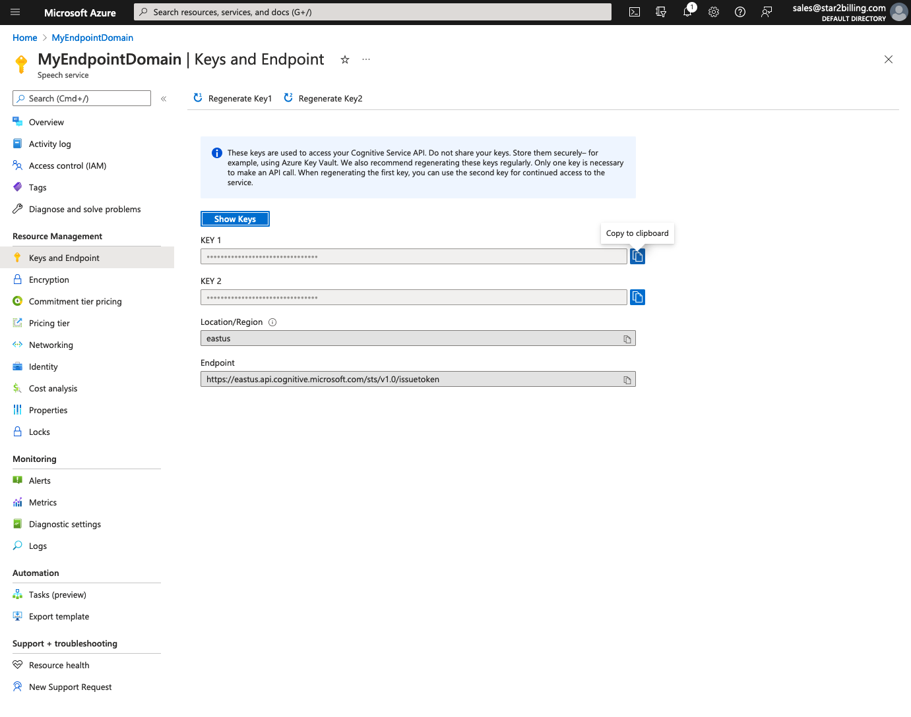

Setting up Microsoft Azure Speech Services (ASR/TTS)¶
Use these instructions to set up both TTS (Text to Speech) and ASR (Automatic Speech Recognition)
1. Sign up to Microsoft Azure at https://azure.microsoft.com/en-us/services/cognitive-services/speech/, when you set up the Speech Services, make sure you choose eastus, we will need the API key that they provide when you add this service.
- Create a resource -> Click or search for “Speech Services” then Create
- Click Create and fill in the details correctly, selecting East US as the zone, then click Review + Create then if all correct, Create
- Wait for a short while
- When created, click on Go To Resource, then Manage Keys
6. Finally send us the key. Make sure that you have provided a payment source to Azure so they can charge you.
